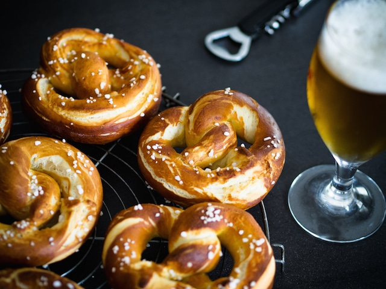

Bretzels
| Portions | Preparation | Cooking time |
|---|---|---|
| 10 bretzels | 2h | 15 min |

Ingredients
Pâte:
- 500 g de farine
- 20 cl de lait
- 10 cl d'eau
- 30 g de beurre mou
- 10 g de sel
- 20 g de levure boulangère (1/2 cube)
Garniture:
- Gros sel ou sésame pour la garniture
Pour le bain de saumure:
- 110 g de bicarbonate de soude pour 3 l d'eau
Steps
Préparation de la pâte:
- Faites dissoudre la levure dans le lait et l'eau tièdes.
- Dans un saladier, versez la farine, le beurre, le sel. Ajouter ensuite le lait avec la levure.
- Pétrissez la pâte pendant 5 bonnes minutes, jusqu'à ce qu'elle devienne bien lisse. Si elle est trop collante, n'hésitez pas à ajouter un peu de farine.
- Huilez une grande jatte, placez la pâte dedans. Recouvrez-la d'un linge propre et laissez la lever pendant 1h30 dans un endroit chaud. Elle doit doubler de volume.
- Après le temps de repos, récupérez la pâte et divisez-la en 10 pâtons. Roulez chacun d'eux entre les mains pour former une ficelle assez longue (50cm); Façonnez les bretzels.
Cuisson:
- Faites bouillir l'eau avec le bicarbonate de soude et plongez-y les bretzels une trentaine de secondes jusqu'à ce qu'ils remontent à la surface.
- Disposez-les sur une plaque recouverte de papier sulfurisé en veillant à laisser suffisamment d'espace car ils gonflent à la cuisson. Entaillez la partie basse avec un couteau et parsemez de gros sel, ou sésame, ou autre.
- Enfournez dans un four préchauffé à 220°C pour environ 15 minutes de cuisson, jusqu'à ce que les bretzels soient joliment dorés.
Tricks